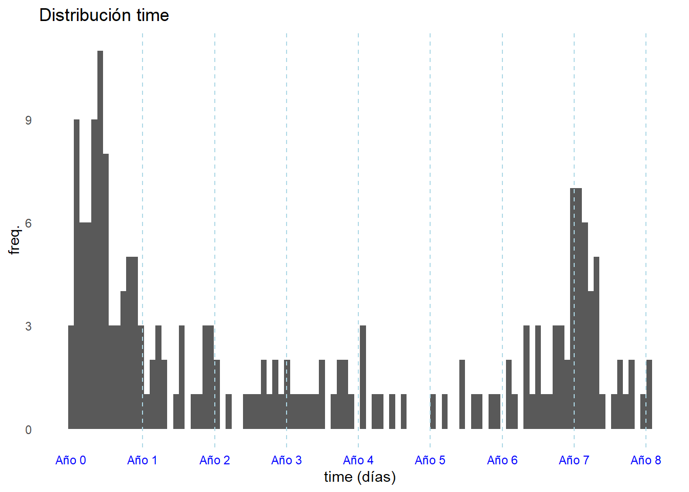
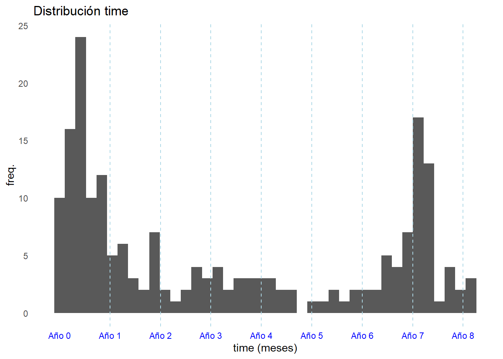
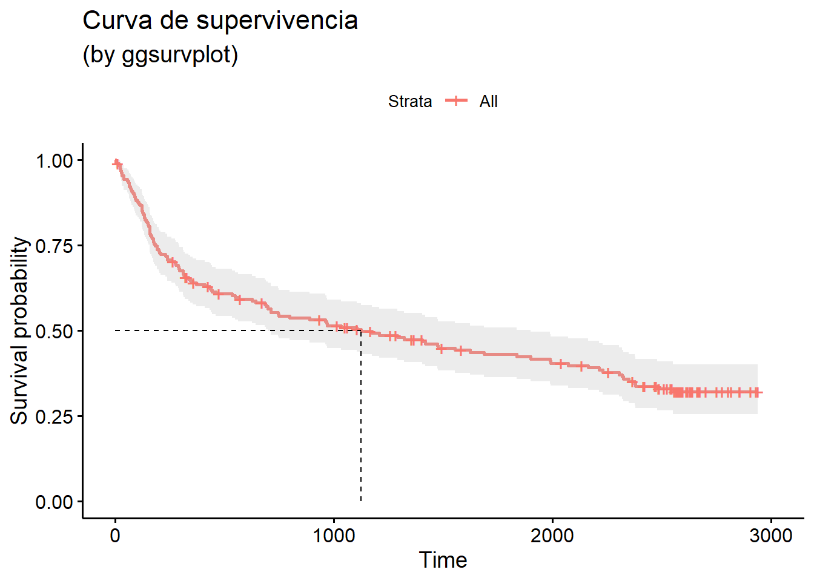
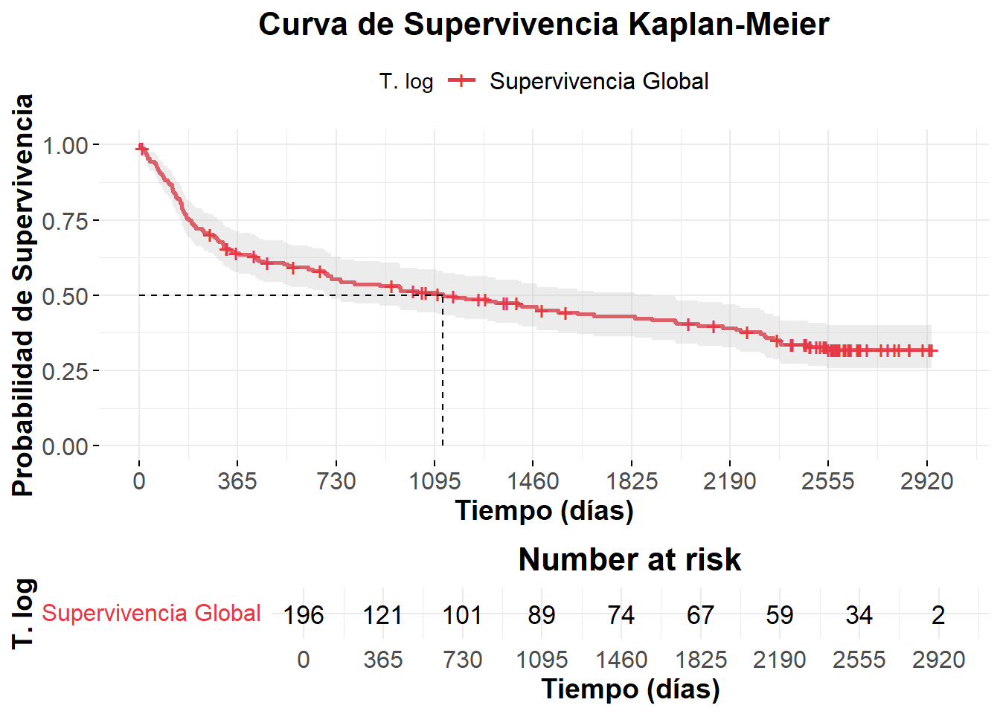
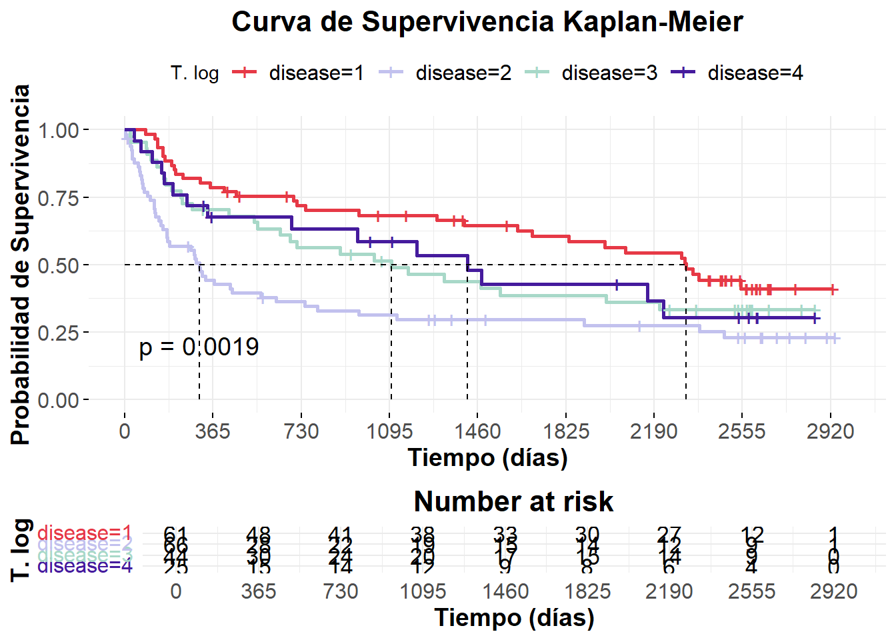

Ejercicio 1
Un investigador dispone de los siguientes datos de un conjunto de pacientes con enfermedad pulmonar que necesitan un trasplante de pulmón. La variable principal es el tiempo (time), en días, hasta que el paciente recibe el trasplante de pulmón; además se dispone de la siguiente información.
status: 0 censurado, 1 trasplante.
age: edad del paciente
gender: 1 mujer, 2 hombre.
bmi: IMC numérico.
disease: estadio de la enfermedad (1,2,3).
past: antecedentes familiares de enfermedad pulmonar (0 no, 1 sí)
Realizar una estimación de la función de supervivencia sin utilizar ninguna de las covariables. Obtener el valor de la mediana de seguimiento y la supervivencia a los 147 días.
Comparar la supervivencia en función de cada covariable categórica.
Tiempo hasta el evento AKA trasplante: ¿tiempo supervivencia global (overall survival) o tiempo hasta enfermedad progresiva (time to progressive disease)? Yo creo que la segunda.
Lectura de datos.
ejercicio2 <- haven::read_dta("~/Master_Bioestadistica/Supervivencia/Tema_02/Datos Ejercicio 2/lung_transplant.dta")
ejercicio2 |> dim(); summary(ejercicio2)
## [1] 196 8
## patient time status age
## Min. : 1.00 Min. : 3.0 Min. :0.0000 Min. :18.00
## 1st Qu.: 49.75 1st Qu.: 182.2 1st Qu.:0.0000 1st Qu.:41.75
## Median : 98.50 Median : 843.5 Median :1.0000 Median :53.00
## Mean : 98.50 Mean :1182.2 Mean :0.6276 Mean :48.56
## 3rd Qu.:147.25 3rd Qu.:2387.5 3rd Qu.:1.0000 3rd Qu.:58.00
## Max. :196.00 Max. :2939.0 Max. :1.0000 Max. :67.00
## gender bmi disease past
## Min. :1.000 Min. :14.00 Min. :1.000 Min. :0.0000
## 1st Qu.:1.000 1st Qu.:19.50 1st Qu.:1.000 1st Qu.:0.0000
## Median :1.000 Median :22.60 Median :2.000 Median :0.0000
## Mean :1.429 Mean :23.42 Mean :2.168 Mean :0.3418
## 3rd Qu.:2.000 3rd Qu.:27.52 3rd Qu.:3.000 3rd Qu.:1.0000
## Max. :2.000 Max. :35.20 Max. :4.000 Max. :1.0000status: 0 censurado, 1 trasplante status: 37.24 % censurado, 62.76 % trasplante
¿median(time) = 843.5? ¡No…!
head(ejercicio2)
## # A tibble: 6 × 8
## patient time status age gender bmi disease past
## <dbl> <dbl> <dbl> <dbl> <dbl> <dbl> <dbl> <dbl>
## 1 1 2324 1 59 1 29.6 1 0
## 2 2 108 1 28 1 22.6 3 0
## 3 3 2939 0 55 1 32.1 2 1
## 4 4 1258 0 62 1 30 2 1
## 5 5 2904 0 51 1 30.4 2 1
## 6 6 444 1 59 1 26.9 2 1ggplot(ejercicio2, aes(x = time)) +
geom_histogram(bins = 100) +
geom_vline(xintercept = seq(365, max(ejercicio2$time), by = 365),
linetype = "dashed", color = "lightblue") +
scale_x_continuous(breaks = seq(0, max(ejercicio2$time), by = 365),
labels = paste0("Año ", seq(0, max(ejercicio2$time) / 365))) +
labs(title = "Distribución time", x = "time (días)", y = "freq.") +
theme_minimal() +
theme(panel.grid = element_blank(),
axis.text.x = element_text(color = "blue"))
ggplot(ejercicio2, aes(x = time / 30)) +
geom_histogram(bins = 40) +
geom_vline(xintercept = seq(12, max(ejercicio2$time / 30), by = 12),
linetype = "dashed", color = "lightblue") +
scale_x_continuous(breaks = seq(0, max(ejercicio2$time / 30), by = 12),
labels = paste0("Año ", seq(0, max(ejercicio2$time / 30) / 12))) +
labs(title = "Distribución time", x = "time (meses)", y = "freq.") +
theme_minimal() +
theme(panel.grid = element_blank(),
axis.text.x = element_text(color = "blue"))
Surv(time, status == 0)
- Surv() crea un objeto de supervivencia.
- time: variable que indica el tiempo hasta el evento o censura.
- status == 0: define que el evento de interés ocurre cuando status == 1 (considera 1 el evento).
La mayoría de los censurados son para valores de tiempo más altos. Posiblemente estas censuras sean porque se cerró el estudio.
[1] 3 4 11+ 16 21 22 25 29 31 31 38 38
[13] 55 61 63 65 70 73 76 80 85 88 92 95
[25] 104 108 114 121 121 123 124 128 132 134 136 142
[37] 148 151 153 158 158 158 159 162 165 169 174 175
[49] 177 184 192 192 199 203 209 231 237 239 257 263+
[61] 273 278 288 290 294 310 311 313 320 322+ 326+ 335
[73] 343 354 358+ 371 410 425+ 431 437 444 461 474+ 535
[85] 549 563 571+ 625 642 671+ 683 689 697 711 711 744
[97] 749 797 890 934+ 962 967 969 1015+ 1032 1049+ 1062+ 1104
[109] 1105+ 1125 1165+ 1173 1208 1258+ 1283+ 1290 1321 1353+ 1364+ 1400+
[121] 1405 1419 1474 1477 1493+ 1553 1581+ 1624 1686 1836 1901 1987
[133] 1991 2037+ 2071 2131+ 2162 2212 2230 2254+ 2303 2317 2324 2349
[145] 2364+ 2375 2378 2416+ 2421+ 2466+ 2471+ 2473+ 2479 2485+ 2487+ 2510+
[157] 2523+ 2538+ 2538+ 2542+ 2545+ 2550 2555+ 2565+ 2571+ 2573+ 2575+ 2582+
[169] 2586+ 2586+ 2591+ 2596+ 2596+ 2612+ 2616+ 2616+ 2618+ 2628+ 2631+ 2636+
[181] 2638+ 2661+ 2664+ 2670+ 2671+ 2672+ 2699+ 2751+ 2775+ 2801+ 2817+ 2854+
[193] 2856+ 2904+ 2929+ 2939+Call: survfit(formula = with(ejercicio2, Surv(time, status)) ~ 1)
n events median 0.95LCL 0.95UCL
[1,] 196 123 1125 697 1901KM1_log <- survfit(with(ejercicio2, Surv(time, status) ~ 1, conf.type='log')) # IC de transformación log (BY DEFAULT)
KM1_log # Curva de supervivenciaCall: survfit(formula = with(ejercicio2, Surv(time, status) ~ 1, conf.type = "log"))
n events median 0.95LCL 0.95UCL
[1,] 196 123 1125 697 1901¡median(time) = 1125! (697, 1901)
Día en el cual el 50 % de los individuos de la cohorte han tenido un trasplante. Indica el punto en el cual la probabilidad de que un individuo no tenga el trasplante es del 50 %.
KM1_plain <- survfit(with(ejercicio2, Surv(time, status) ~ 1, conf.type='plain')) # IC de la aprox normal
KM1_plain # Curva de supervivenciaCall: survfit(formula = with(ejercicio2, Surv(time, status) ~ 1, conf.type = "plain"))
n events median 0.95LCL 0.95UCL
[1,] 196 123 1125 697 1901KM1_loglog <- survfit(with(ejercicio2, Surv(time, status) ~ 1, conf.type='log-log')) # IC de transformación log-log
KM1_loglog # Curva de supervivencia Call: survfit(formula = with(ejercicio2, Surv(time, status) ~ 1, conf.type = "log-log"))
n events median 0.95LCL 0.95UCL
[1,] 196 123 1125 697 1901survminer::ggsurvplot(KM1_log,
data = ejercicio2,
title = "Curva de supervivencia",
subtitle = '(by ggsurvplot)',
conf.int = T,
surv.median.line = "hv") # líneas H y V
prodlim::Hist proporciona las extensiones adecuadas para tratar con datos censurados a la derecha y censurados por intervalos de riesgos competitivos y otros modelos multiestado.
prodlim::Hist(ejercicio2$time, ejercicio2$status)
Right-censored response of a survival model
No.Observations: 196
Pattern:
Freq
event 123
right.censored 73 Quantiles of the event time distribution based on the Kaplan-Meier method.
Table of quantiles and corresponding confidence limits:
q quantile lower upper
<num> <num> <num> <num>
1: 0.00 NA NA NA
2: 0.25 NA 2550 NA
3: 0.50 1125 697 1836
4: 0.75 184 153 290
5: 1.00 3 3 21
Median with interquartile range (IQR):
Median (IQR)
<char>
1: 1125.00 (184.00;NA)¡median(time) = 1125! (697, 1836). Antes (697, 1901)
Código
survminer::ggsurvplot(
KM1_log,
data = ejercicio2,
conf.int = TRUE, # Intervalos de confianza
conf.int.style = "ribbon", # Sombreado para el IC
break.time.by = 365, # Ejes en intervalos de 5
risk.table = TRUE, # Tabla de riesgo debajo
risk.table.height = 0.25, # Tamaño de la tabla de riesgo
risk.table.col = "black", # Color del texto de la tabla de riesgo
pval = TRUE, # Mostrar p-valor
surv.median.line = "hv", # Línea en la mediana de supervivencia
legend.title = "T. log", # Título de la leyenda
legend.labs = c("Supervivencia Global"), # Etiqueta de la leyenda
palette = c("#E63946"), # Color principal de la curva
xlab = "Tiempo (días)", # Etiqueta del eje X
ylab = "Probabilidad de Supervivencia",# Etiqueta del eje Y
title = "Curva de Supervivencia Kaplan-Meier", # Título principal
ggtheme = theme_minimal() + # Estilo de la gráfica
theme(
plot.title = element_text(hjust = 0.5, size = 16, face = "bold"),
axis.title = element_text(size = 14, face = "bold"),
axis.text = element_text(size = 12),
legend.position = "bottom",
legend.text = element_text(size = 12)
)
)
Supervivencia a los 147 días: 0.821 (0.768, 0.876).
summary(KM1_log, time = 147, extend = TRUE) Call: survfit(formula = with(ejercicio2, Surv(time, status) ~ 1, conf.type = "log"))
time n.risk n.event survival std.err lower 95% CI upper 95% CI
147 160 35 0.821 0.0275 0.768 0.876KM2_log <- survfit(with(ejercicio2, Surv(time, status) ~ disease , conf.type='log')) # IC de transformación log (BY DEFAULT)
KM2_log # Curva de supervivenciaCall: survfit(formula = with(ejercicio2, Surv(time, status) ~ disease,
conf.type = "log"))
n events median 0.95LCL 0.95UCL
disease=1 61 32 2324 1686 NA
disease=2 66 48 310 175 744
disease=3 44 28 1104 642 NA
disease=4 25 15 1419 689 NACódigo
survminer::ggsurvplot(
KM2_log,
data = ejercicio2,
conf.int = FALSE, # Intervalos de confianza
conf.int.style = "ribbon", # Sombreado para el IC
break.time.by = 365, # Ejes en intervalos de 5
risk.table = TRUE, # Tabla de riesgo debajo
risk.table.height = 0.25, # Tamaño de la tabla de riesgo
risk.table.col = "black", # Color del texto de la tabla de riesgo
pval = TRUE, # Mostrar p-valor
surv.median.line = "hv", # Línea en la mediana de supervivencia
legend.title = "T. log", # Título de la leyenda
legend.labs = c("disease=1","disease=2","disease=3","disease=4"), # Etiqueta de la leyenda
palette = c("#E63946", "#c2c1Ee", "#A8d8c8", "#451b9D"), # Color principal de la curva
xlab = "Tiempo (días)", # Etiqueta del eje X
ylab = "Probabilidad de Supervivencia",# Etiqueta del eje Y
title = "Curva de Supervivencia Kaplan-Meier", # Título principal
ggtheme = theme_minimal() + # Estilo de la gráfica
theme(
plot.title = element_text(hjust = 0.5, size = 16, face = "bold"),
axis.title = element_text(size = 14, face = "bold"),
axis.text = element_text(size = 12),
legend.position = "bottom",
legend.text = element_text(size = 12)
)
)